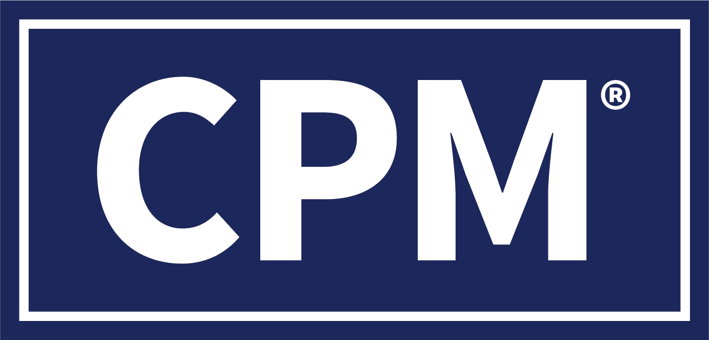

不動産オーナー様のための資格ガイド
CPM® と CCIM
― 何が違い、何ができるのか
オーナー様の「物件価値を最大化させる」プロと
「資産価値を最大化させる」プロ。世界基準の2つの称号を紹介します。
CPM® = 運営・経営のプロ
CCIM = 投資・取引のプロ

CPM® について
賃貸経営管理の最高峰 ― 不動産経営管理士
米国シカゴ本部の IREM®（全米不動産管理協会） が認定する Certified Property Manager®。高い倫理観と高度な専門性を持つと認められた個人のみに与えられる、不動産マネジメント資格の世界基準です。
幅広い専門知識
倫理・収支分析・資金計画・入居者募集・集客・修繕・スタッフ管理を体系的に習得
高い倫理観と信用力
厳格な倫理基準の維持が認定要件。違反時の審査・罰則制度も完備し、世界的な信頼を獲得
世界規模のネットワーク
収支シミュレーションなどの実務ツールや、世界規模のビジネスネットワークを活用できる
出典：IREM JAPAN（irem-japan.org/cpm）｜数値は2024年3月時点

CCIM について
不動産投資分析のプロフェッショナル ― 認定商業投資不動産士
米国 CCIM Institute（全米認定不動産投資顧問協会） が認定する、不動産投資分析の高度な教育プログラム。多くの実例演習を通じて、筋道立てた正しい投資判断を行う力を習得します。
高度な投資分析
お金の流れの分析・市場の分析など、幅広い投資の見極め方を実践的に習得する
実例を使った演習
多くの実例を分析・解決しながら、学んだその日から使える実務力を養う
適正な投資判断
米国で権威ある称号。不動産投資の「真のプロ」を目指すための学び
出典：CCIM JAPAN（ccim-japan.com/ccim.html）
はじめに
不動産には、2つの「頭脳」が必要です
運営の脳（CPM®）
持っている物件を、
いかに稼がせ続けるか
賃料・空室・経費・修繕をうまく調整し、毎年の手取り収入を最大化する力。
投資の脳（CCIM）
買う・売る・投資判断を、
いかに正しく行うか
市場と数字を読み、「いくらで買うべきか」「今売るべきか」「儲かるか」を分析する力。
この2つを担うのが、それぞれ CPM® と CCIM です。
まず整理：管理には「3つの段階」がある
普通の管理会社 ／ 運営の管理 ／ 資産の管理 の違い
資産の管理（AM）
オーナー様の「資産」を見て判断 ― 購入から出口まで
運営の管理（PM）
物件の「利益」を最大化 ― 賃料の決め方・入居者募集・経費の見直し
普通の管理会社（建物の管理）
建物の「日常」を担当 ― 清掃・設備・入居者対応・退去後の修繕
3つの段階を、視点で比べる
誰の・何を・どう見ているか
| 普通の管理会社（建物の管理） | 運営の管理（PM） | 資産の管理（AM） |
|---|
| 見ているもの | 建物・設備・入居者 | 物件のもうけ（家賃−経費） | オーナー様の資産・投資 |
|---|
| 主な仕事 | 清掃・点検・修繕・対応 | 賃料設定・入居者募集・経費削減・予算 | 買う/売るの判断・売り抜け方 |
|---|
| 成果の見方 | 入居状況・クレーム件数 | 入居率・もうけ・家賃の回収率 | 利回り・トータルの収益率・資産価値 |
|---|
| 時間軸 | 今日・今月 | 今年〜数年 | 買ってから売るまでの全期間 |
|---|
資格でいうと → CPM® は 運営〜資産の管理の実務を、CCIM は投資・取引の分析をカバーします。
CPM® とは
Certified Property Manager®
認定不動産経営管理士（IREM｜全米不動産管理協会）
物件を「経営」して価値を生み出す運営のプロフェッショナルの世界基準。収益・予算・人・建物を動かし、オーナー様のリターンを最大化します。
ETH800
不動産管理士のための倫理
全CPM®教育の根幹・土台。倫理を軸にしたビジネスが成功を導く
HRS402
勝ち残る管理チームの指揮
優秀な人材の採用・教育・保持と、変化をリードするリーダーシップ
FIN402
予算とキャッシュフロー報告
CF分析・融資の分析と計算・物件価値の求め方・単年度投資指標
ASM603
投資用不動産の融資とローン分析
FIN402を基に深化。損益分岐点・資本化率（還元率）の計算手法
MNT402
メンテナンス管理と物件リスク
費用効率の高い保守計画とリスク管理。賠償責任や大規模修理を回避
ASM604
投資用不動産の成果と評価
貨幣の時間的価値を考慮した複数年度評価。IRR・NPVを使いこなす
MKL410
マーケティングとリーシング戦略
市場分析・家賃設定の手法・リーシング戦略・入居者保持で稼働を最大化
ASM605
投資用不動産の資産分析
オーナー様への改善提案と最適プラン選定。スプレッドシート分析を習得
CPM® の仕事 ①｜キャッシュフローツリー
家賃が「手取り」になるまでの流れ
共通事例物件：取得価格 5億円（=500,000千円）／自己資金 1.5億円（=150,000千円）・借入 3.5億円 ｜ 下表は千円・年額
潜在総収入（GPI｜満室想定の家賃）50,000
− 空室・貸倒損失（5%）−2,500
＋ その他収入（駐車場など）+500
＝ 実効総収入（EGI）48,000
− 運営費（管理・修繕・税公課）−18,000
＝ 純営業収益（NOI）30,000
− 年間負債支払（元利返済 ADS）−21,000
＝ 税引前CF（BTCF）← CPM®はここまで9,000
− 所得税−750
＝ 税引後CF（ATCF）← CCIMはここまで見る8,250
運営は BTCF、投資判断は ATCF
CPM®は家賃・空室・運営費・返済を管理して NOI〜BTCF（税引前手取り）を最大化。
CCIMはさらに税金まで引いた ATCF（税引後手取り）で、投資として儲かるかを判断します。
CPM® の仕事 ②｜財務レバレッジ（てこの原理）
借入を「てこ」にして、自己資金の利回りを引き上げる
共通事例物件：取得価格 5億円／自己資金 1.5億円・借入 3.5億円 ｜ レバレッジ＝他人資本（借入）の活用
少ない自己資金で、大きな資産を動かす
自己資金1.5億円に借入3.5億円を加え、5億円の物件を取得
自己資金だけで買う
1.5億円ぶんの規模しか持てない
借入を活用する（レバレッジ）
5億円の規模（約3.3倍）― 自己資金は同じ
自己資金 1.5億借入 3.5億
レバレッジの「正・負」を決めるルール
物件の利回り（FCR）と 借入コスト（ローン定数）の大小で決まる
| タイプ | FCR vs ローン定数 | 自己資金利回り |
|---|
| 正 | 6% ＞ 5% | ↑ 高くなる（8%） |
|---|
| 中立 | 6% ＝ 6% | → 変わらない（6%） |
|---|
| 負 | 6% ＜ 7% | ↓ 下がる（4%） |
|---|
物件が生む利回りが借入コストを上回れば、借りるほど自己資金の利回りは上がる。逆に下回ると損失も拡大する「もろ刃の剣」です。
本事例は FCR 6.0%・ローン定数 6.0% でほぼ均衡。それでも元金返済と値上がり益が自己資金に集中するため、10年のIRRは9.0%まで高まります（次ページ）。
CPM® の仕事 ③｜10年間のキャッシュフロー（投資の全体像）
0年目に投じ、毎年回収し、最後に売る
自己資本 −150,000（=1.5億円）（0年目）→ 毎年のBTCF → 10年目に BTCF＋売却手取り（単位：千円）
0年目：自己資本の投下
毎年のBTCF（運営の手取り）
10年目：売却手取り（130,000）
CPM® が生み出す価値
CPM®は、オーナー様の
物件価値を最大化します。
CCIM とは
Certified Commercial Investment Member
認定事業用投資不動産メンバー（CCIM協会）
物件を「投資対象」として分析し、売買・投資判断を導くプロフェッショナル。
「いくらで買い、いつ売れば儲かるか」を数字で証明します。
① CI 102
市場分析
市場調査・市場力学・経済基盤分析
② CI 103
ユーザー決定分析
スペース取得プロセス・リース比較・リースvs所有・借家権の評価とリース出口
③ CI 104
投資分析
投資ライフサイクル・割引率・財務レバレッジとリスク・所得税の影響・保有/売却（出口）判断
④ CI 101
財務分析
貨幣の時間的価値・キャッシュフロー・IRR/NPV・DSCR・資本蓄積
＋ CCR（概念復習）を経て総合試験に合格すると CCIM 称号を取得。
CCIM の仕事 ①｜市場調査（CI102）
市場を分析して「買い時・売り時」を読む
吸収分析（Absorption）
市場が新規供給をどれだけ消化するか。吸収が供給を上回ると空室が減る
新規供給純吸収
吸収 ＞ 供給 → 空室減 → 賃料・価格の上昇
シフトシェア分析（Shift-Share）
地域の雇用成長を3要素に分解。EBAでは分からない「全国の同業種に対する競争力」を測る
AG ＝ NG ＋ IM ＋ RS。全国・産業構成を超える 地域シフト＝エリア固有の競争力
経済基盤分析（移出産業・立地係数）で需要の源泉を特定し、物件タイプ別（オフィス／居住／工業／小売）に市場を評価します。
CCIM の仕事 ②｜資本蓄積で「買う」か「借りる」か（CI103）
所有 vs リースを資本蓄積で比較する
資本蓄積（Capital Accumulation）の手順 ― IRRの欠点を補い、正のCFを再投資して比較（例：単位 千円）
1
各案の正のキャッシュフローを、同じ期間・同じ再投資率で将来価値（FV）まで積み上げる。
2
買う（所有）＝頭金を投じ、返済・税メリット・売却益で資本をつくる。
借りる（リース）＝賃料を払い、浮いた自己資金を別運用する。
3
最後に手元に残る資本（FV＝資本蓄積）が大きい方を選ぶ。感覚でなく数字で決められる。
財務キー
◀ 有利所有（買う）頭金を投下
リース（借りる）浮いた資金を運用
N期間（年）
10
10
I/YR金利（再投資率）
6%
6%
PV現在価値（初期投資）
−30,000
0
PMT定期的支払い（年間CF）
−2,000
−3,600
FV将来価値＝資本蓄積
92,000
78,000
CCIM の仕事 ③｜投資の「ものさし」
NPV と IRR で「買っていいか」を判定
事例物件を 税引後（ATCF） で評価し、IRR を「要求利回り」と比べる（CI101・CI104 / ASM604 ｜ 金額の単位：千円）
① NPV ＝ +12,090千円 正味現在価値（約1,200万円）
将来の税引後CFを「今の価値」に割り引いて合計。プラスなら投資する価値あり。
② IRR ＝ 9.0% 内部収益率
この投資が生む年平均の利回り（税引後）。投資の「実力値」です。
③ 要求利回り 8.0% と比較 判定
IRRが要求利回りを上回れば「買い」。下回るなら「いくらまで値下げ交渉すれば合うか」を逆算（カウンターオファー）。
CCIM の仕事 ③｜利回りを「現実の数字」で見る
利回りは “実際に手元に残る数字” で見極めます
よく使われる利回り（IRR）は実際より高く見えがち。CCIMは現実に近い利回り（MIRR）で見直して、ご判断します。
① なぜ高く見えるの？
よくある利回り（IRR）は「途中で入る家賃なども、ずっと同じ高い利回りで運用できる」前提で計算します。現実はそこまで上手くいかないため、実際より良く見えがちです。
② 現実に近い数字で計算し直す
受け取ったお金を無理のない利回りで運用する前提に直して計算（MIRR）。本当に手元に残る利回りに近づきます。
③ 結論が逆転することも
パッと見の利回りはA物件が上でも、実際に残るお金で比べるとB物件が得、という逆転もあります。CCIMは現実の数字で比べ、後悔のないご判断をお手伝いします。
CCIM が生み出す価値
CCIMは、オーナー様の
資産価値を最大化します。
結論：CPM® と CCIM の違い（一枚で）
運営のプロ ｜ 投資のプロ
| CPM®（IREM） | CCIM（CCIM協会） |
|---|
| 役割 | 物件を経営して稼がせる | 投資・売買を分析して判断する |
|---|
| 得意分野 | 運営・予算・入居者募集・修繕・人 | お金・市場・投資の分析 |
|---|
| 主な場面 | 保有中の日々〜数年の運営 | 取得時・売却時の意思決定 |
|---|
| キーワード | もうけ・入居率・手取り収入 | 総合利回り・今の価値の利益・市場の波 |
|---|
| オーナー様への価値 | 資産価値を「守り・高める」 | 資産を「正しく増やす・売り抜け方をつくる」 |
|---|
使い分け：物件の一生（取得〜売却）で見る
どの場面で、どちらが活きるか
① 取得
CCIM
買うべきか・適正価格か・利回りは合うかを分析
② 運営・価値向上
CPM®
賃料・空室・経費・修繕を最適化してもうけを引き上げる
③ 保有判断
CPM® + CCIM
運営実績を踏まえ、保有継続か再投資かを検討
④ 売却
CCIM
市場を読み、最も高く売れるタイミングと価格を判断
入口と出口は CCIM、保有中の価値づくりは CPM®。
オーナー様の「お悩み」で選ぶ
こんな時は、どちらに相談？
CPM® に相談
- 空室が埋まらない／賃料を上げたい
- 管理コストが高い気がする
- 収支がどんぶり勘定で見えない
- 修繕計画やトラブル対応を任せたい
- 今ある物件の利益をもっと出したい
CCIM に相談
- 物件を買おうか迷っている
- 提示価格が妥当か知りたい
- 今が売り時か判断したい
- 複数の投資先で迷っている
- このエリアの市場が知りたい
まとめ
資産価値は、両輪で最大化する
CPM®｜運営の脳
持っている物件を、いかに高く稼がせ続けるか。
日々の経営で資産価値を守り・高める。
CCIM｜投資の脳
買う・売る・投資する判断を、いかに正しく行うか。
入口と出口で資産を正しく増やす。
正しく買い（CCIM）、上手に運営する（CPM®）。
この両輪がそろって、オーナー様の収益は最大になる。